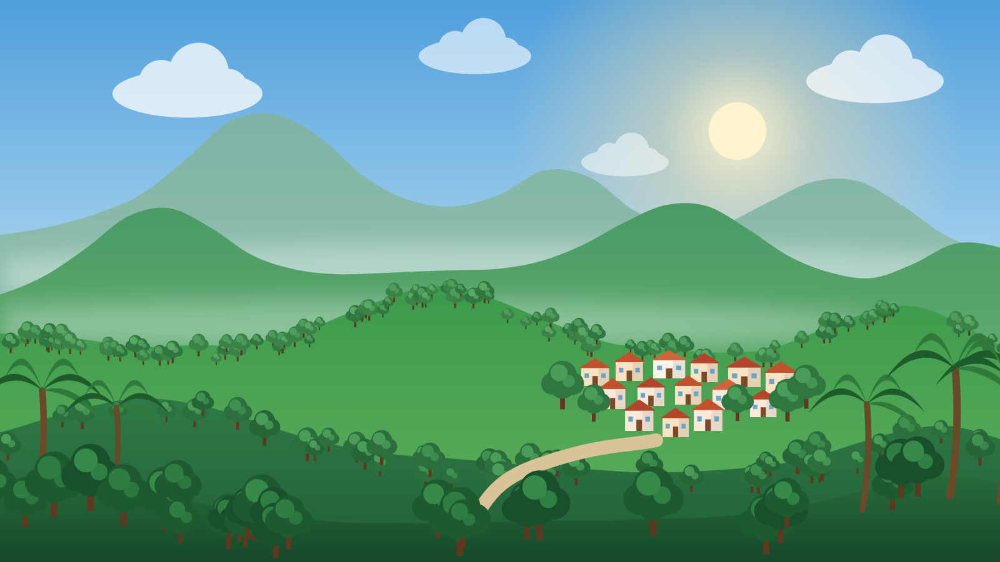
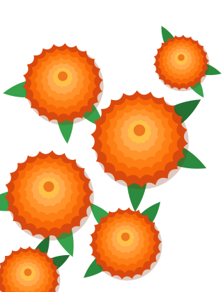
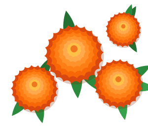
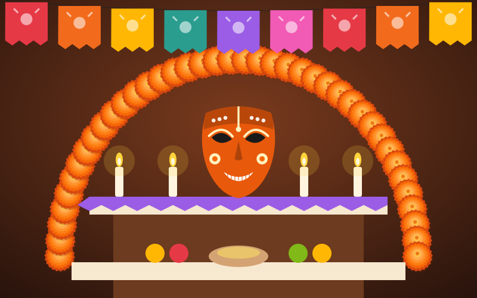
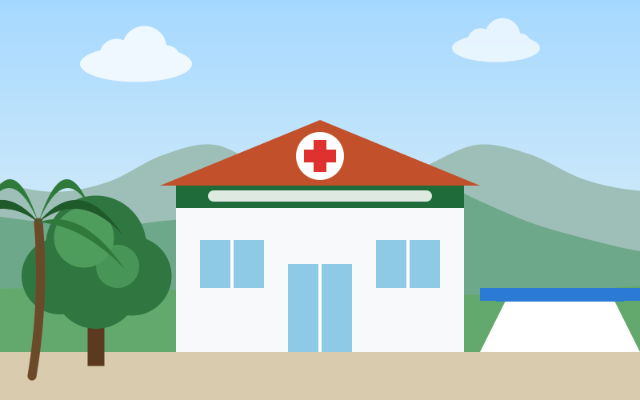
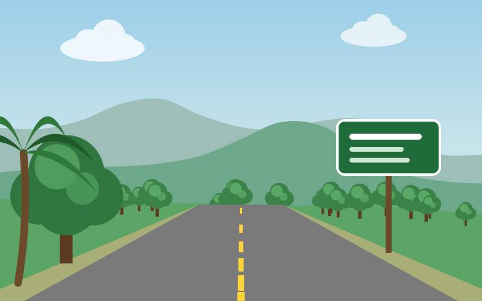

Se realizarán trabajos de mantenimiento en la red. Toma tus precauciones.



Chapulhuacanito es su gente
Una comunidad que avanza, conecta y preserva sus raíces.
Lo más importante hoy
Ver todos
Evento
Servicios
NoticiaExplora Chapulhuacanito
Conoce, participa y vive nuestras tradiciones.